第 7 章 外部流动#
本章解决：绕物流动的对流换热如何定量。第 6 章立起了边界层方程与无量纲参数，本章把它们变成能算数的工具：平板层流用 Blasius–波尔豪森相似解精确求解，湍流与层流–湍流混合边界层用经验关联式分段积分；横掠圆柱与球因出现边界层分离，只能靠实验关联式（Hilpert、Zukauskas、Churchill–Bernstein、Whitaker）；横掠管束再叠加排列方式、排数修正与压降计算；冲击射流与堆积床各有一组专用关联式。流体温度沿程变化时用对数平均温差兜底。
7.0 本章导图#
7.1 经验方法#
外部流动（external flow）的定义先立住：边界层可以自由发展、不受相邻表面约束的流动，边界层外总存在速度、温度、浓度梯度都可以忽略的区域。平板（平行或倾斜于来流）、球、圆柱、机翼、涡轮叶片表面上的流动都算。本章只处理低速、无相变的强制对流——内部流动、自然对流、相变对流分别在第 8、9、10 章。
目标还是求对流系数。第 6 章已经无量纲化过边界层方程，局部与平均对流系数必能整理成这样的函数形式：
实验怎么做？看图 7.1：给一块平行来流的平板通电加热，维持表面温度 \(T_s\)，测 \(T_s\)、\(T_\infty\) 与电功率 \(E = I^2R\)（它就等于总换热量 \(q\)），由牛顿冷却公式反出整块平板的平均对流系数 \(\overline{h}_L\)；再由特征长度 \(L\) 与流体物性算出 \(Nu_L\)、\(Re_L\)、\(Pr\)。
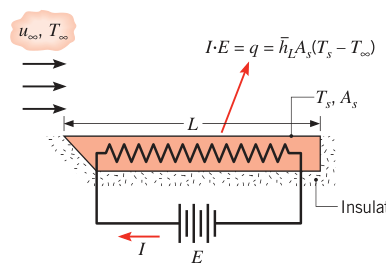
换速度、换板长、换流体（空气、水、机油，普朗特数差异巨大），重复实验，把一堆 \((Re_L,\ Nu_L)\) 画在对数坐标上：同一流体（\(Pr\) 固定）的数据点几乎落在一条直线上——幂律关系。于是有经验关联式（empirical correlation）的通用形式：
不同 \(Pr\) 对应一族平行直线。把纵坐标改成 \(Nu_L/Pr^n\)，一族直线折叠成一条——说明 \(C\)、\(m\)、\(n\) 基本与流体种类无关（图 7.2）。\(C\)、\(m\)、\(n\) 只随几何与流动类型变。
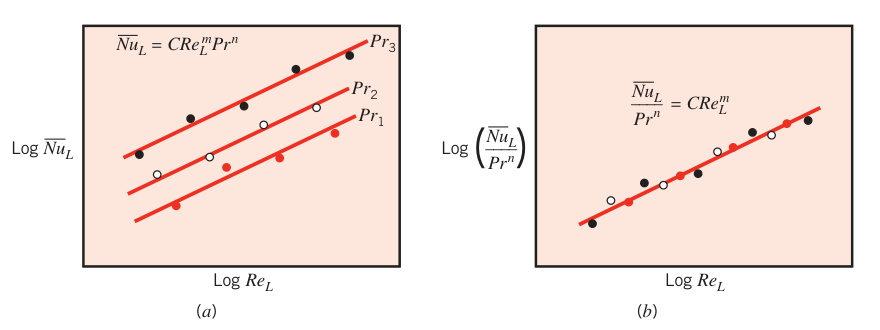
拓展：为什么能折叠成一条线
同一种流体 \(Pr\) 固定，数据点只随 \(Re\) 变，于是落在一条幂律直线上；换流体只改变 \(Pr\)、不改变输运机制，所以不同 \(Pr\) 的直线彼此平行。把 \(Pr^n\) 除到左边，"纯 \(Re\) 效应"就归一成一条母线——这是整理实验数据的经典手法，后面每种几何的关联式都这么来。
式 (7.1) 隐含了常物性假设，而真实流体的物性随温度变，这个影响有两种处理办法。其一，所有物性都取膜温度（film temperature）\(T_f\) 下的值，即边界层内的平均温度：
其二，物性全部取来流温度 \(T_\infty\) 下的值，再在式 (7.1) 右边乘一个物性比参数，常见形式为 \((Pr_\infty/Pr_s)^r\) 或 \((\mu_\infty/\mu_s)^r\)，下标 \(\infty\)、\(s\) 分别代表按来流温度与表面温度取值。后面两种方法都会用到。传质问题同理，关联式形式为：
常数 \(C\)、\(m\)、\(n\) 与式 (7.1) 相同。
7.2 平板平行流动#
平行流过平板（图 7.3）是最简单的外部流动，但工程里到处是它。第 6 章讲过：层流边界层从前缘（\(x=0\)）开始发展，到下游某处 \(x_c\)（局部雷诺数达到临界值 \(Re_{x,c}\)）发生转捩（transition）。
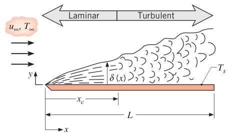
7.2.1 等壁温平板上的层流：相似解#
设稳态、不可压、常物性、忽略黏性耗散，且 \(dp/dx = 0\)（平板平行流动中压强沿程不变），边界层方程组（式 6.27–6.30）退化为：
常物性时速度场与温度、浓度解耦——先解水力学问题（式 7.4、7.5），再解温度与浓度（式 7.6、7.7）。
水力学解：Blasius 方法。第一步引入流函数（stream function）\(\psi(x,y)\)，让连续方程自动满足：
再定义新的变量——相似变量（similarity variable）\(\eta\) 与无量纲流函数 \(f\)：
之所以叫相似解（similarity solution）：尽管边界层随 \(x\) 增厚，速度剖面 \(u/u_\infty\) 的形状始终几何相似，可以写成单一变量 \(\eta\) 的函数：
把式 (7.8)–(7.10) 代入并求导，得到速度分量与导数：
代入动量方程 (7.5)，偏微分方程变成非线性三阶常微分方程：
边界条件"壁面无滑移无穿透、远处来流"：
级数展开或数值积分可解式 (7.17)，结果列在表 7.1。第三列 \(df/d\eta = u/u_\infty\) 画出来就是图 7.4a 的速度剖面。注意到 \(\eta \approx 5.0\) 时 \(u/u_\infty \approx 0.99\)——按"速度达到来流 99% 处"定义边界层厚度 \(\delta\)，由式 (7.10)：
表 7.1 平板层流边界层函数
| \(\eta\) | \(f\) | \(df/d\eta = u/u_\infty\) | \(d^2f/d\eta^2\) |
|---|---|---|---|
| 0 | 0 | 0 | 0.332 |
| 0.4 | 0.027 | 0.133 | 0.331 |
| 0.8 | 0.106 | 0.265 | 0.327 |
| 1.2 | 0.238 | 0.394 | 0.317 |
| 1.6 | 0.420 | 0.517 | 0.297 |
| 2.0 | 0.650 | 0.630 | 0.267 |
| 2.4 | 0.922 | 0.729 | 0.228 |
| 2.8 | 1.231 | 0.812 | 0.184 |
| 3.2 | 1.569 | 0.876 | 0.139 |
| 3.6 | 1.930 | 0.923 | 0.098 |
| 4.0 | 2.306 | 0.956 | 0.064 |
| 4.4 | 2.692 | 0.976 | 0.039 |
| 4.8 | 3.085 | 0.988 | 0.022 |
| 5.2 | 3.482 | 0.994 | 0.011 |
| 5.6 | 3.880 | 0.997 | 0.005 |
| 6.0 | 4.280 | 0.999 | 0.002 |
| 6.4 | 4.679 | 1.000 | 0.001 |
| 6.8 | 5.079 | 1.000 | 0.000 |
由式 (7.19)：\(x\) 越大、\(\nu\) 越大，边界层越厚；来流速度 \(u_\infty\) 越大，边界层越薄。壁面切应力由式 (7.15) 在 \(y=0\) 处取值（查表 \(f''(0) = 0.332\)）：
于是局部摩擦系数（local friction coefficient）：
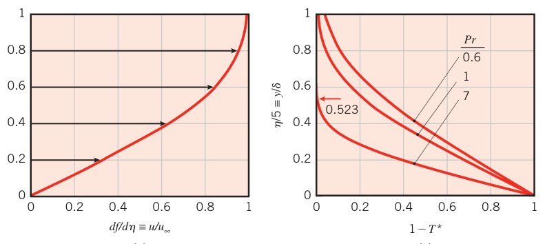
拓展：相似变量的直观图像
\(\eta = y\sqrt{u_\infty/(\nu x)}\) 把"离壁多远"和"流了多远"揉成一个数：同一 \(\eta\) 处，速度、温度都相同。越往下游（\(x\) 大），同样的 \(\eta\) 对应更大的真实距离 \(y\)——这就是边界层 \(\propto x^{1/2}\) 增厚的数学表达。Blasius 1908 年提出它时还没有计算机，靠手算把这张表积了出来。
传热解。水力学问题解完，能量方程可以跟着解。引入无量纲温度 \(T^* \equiv [(T - T_s)/(T_\infty - T_s)]\)，设相似解 \(T^* = T^*(\eta)\)，代入式 (7.6)：
注意 \(f\) 的出现——热解依赖水力解。边界条件 \(T^*(0) = 0\)、\(T^*(\infty) = 1\)（式 7.22）。对不同 \(Pr\) 数值积分，几个温度剖面见图 7.4b：\(Pr\) 越小，热影响钻进速度边界层越深；\(Pr \gtrsim 1\) 时热边界层比速度边界层薄。对 \(Pr \ge 0.6\)，壁面温度梯度可以拟合为 \(\left.dT^*/d\eta\right|_{\eta=0} = 0.332\, Pr^{1/3}\)。由 \(h_x = -k(dT/dy)\big|_{y=0}/(T_s - T_\infty)\) 得局部努塞尔数：
边界层厚度之比也随之而来：
例如 \(Pr = 7\)（水）时 \(\delta/\delta_t = 1.91\)（\(\delta_t/\delta = 0.523\)，见图 7.4b）。
传质解。组分方程 (7.7) 与能量方程 (7.6) 同构（\(D_{\mathrm{AB}}\) 换掉 \(\alpha\)），归一化组分密度 \(\rho_{\mathrm{A}}^* = [(\rho_{\mathrm{A}} - \rho_{\mathrm{A},s})/(\rho_{\mathrm{A},\infty} - \rho_{\mathrm{A},s})]\) 的边界条件（式 7.25）也与温度同构，直接套第 6.7.1 节的传热传质类比：
平均边界层参数。局部量知道后，从 0 积到 \(x\) 就得到平均量。平均摩擦系数：
平均换热系数 \(\overline{h}_x = \frac{1}{x}\int_0^x h_x\, dx\)，代入式 (7.23) 积分后恰好是局部值的 2 倍：
拓展：为什么平均恰好是局部的 2 倍
层流时 \(h_x \propto x^{-1/2}\)（式 7.23 代入 \(Re_x = u_\infty x/\nu\) 即见）。一个幂律 \(h_x \propto x^{-1/2}\) 从 0 积到 \(x\) 再除以 \(x\)，得 \(\overline{h}_x = 2h_x\)——对任何 \(\propto x^{-1/2}\) 的局部系数都成立。湍流就不同：\(h_x \propto x^{-1/5}\) 衰减慢得多，平均只比局部大 25%（\(1/(1-1/5) = 5/4\)）。前缘处局部系数理论上无穷大（\(x \to 0\)），平均量才是能测的东西。
液态金属。\(Pr\) 极小的流体（液态金属）不适用式 (7.23)：热边界层发展得比速度边界层快得多（\(\delta_t \gg \delta\)），可以假设热边界层内速度均匀（\(u = u_\infty\)）。按这个假设解热边界层方程：
其中 \(Pe_x \equiv Re_x\, Pr\) 是佩克莱数（Peclet number）。液态金属有腐蚀性、活性强，但熔点与蒸气压低、热容与导热高，是高换热速率场合（核反应堆冷却）的优选工质。一个对所有 \(Pr\) 都适用的单一关联式由 Churchill 和 Ozoe 给出：
以上各式的 \(x\) 都从平板前缘量起，适用于 \(0 \le x \le x_c\)（转捩前）。变物性影响统一用膜温度（式 7.2）处理。
7.2.2 等壁温平板上的湍流#
湍流边界层本质上是非稳态的，不可能得到精确解析解。实验结果表明，雷诺数到 \(10^8\) 为止，局部摩擦系数可用下式拟合（误差 15% 以内）：
速度边界层厚度近似为：
对比层流结果（式 7.19、7.20）：湍流边界层增长快得多（\(\delta \propto x^{4/5}\) 对层流的 \(x^{1/2}\)），摩擦系数衰减慢得多（\(x^{-1/5}\) 对 \(x^{-1/2}\)）。湍流边界层的发展由流体的随机脉动主导、与分子扩散无关，所以它的相对增长不依赖 \(Pr\) 或 \(Sc\)——速度、温度、浓度边界层厚度近乎相等：\(\delta \approx \delta_t \approx \delta_c\)。
用式 (7.34) 配合修正雷诺类比（modified Reynolds analogy，即奇尔顿–科尔伯恩类比，式 6.70、6.71），得到局部努塞尔数与舍伍德数：
拓展：奇尔顿–科尔伯恩类比与 j 因子
雷诺类比说"动量、热量、质量输运是同一回事"，给出 \(C_f/2 = St = St_m\)，只在 \(Pr = Sc = 1\) 时严格成立。奇尔顿–科尔伯恩（Chilton–Colburn）修正把它推广为 \(C_f/2 = St\, Pr^{2/3} = St_m\, Sc^{2/3}\)，定义科尔伯恩 j 因子 \(j_H = \overline{St}\, Pr^{2/3}\)、\(j_m = \overline{St}_m\, Sc^{2/3}\)，则 \(C_f/2 \approx j_H \approx j_m\)。它把"能测摩擦就能猜换热"变成工程上极其好用的招数——7.8 节堆积床的关联式就是 j 因子形式的。
混合对流系数怎么算？湍流边界层前面总有一段层流，所以先讲混合边界层条件。
7.2.3 混合边界层条件#
整板层流，用式 (7.29)–(7.31)。转捩发生在板尾部（\(0.95 \lesssim x_c/L \le 1\)），仍可用它们近似。但转捩发生在上游足够远处（\(x_c/L \lesssim 0.95\)）时，平均系数必须同时考虑层流段与湍流段。设转捩在 \(x_c\) 处突生，全板平均换热系数分段积分：
把式 (7.23)、(7.36) 代入并积分：
常数 \(A\) 由临界雷诺数决定：
\(Re_{x,c} = 5\times 10^5\) 时 \(A = 871\)。平均摩擦系数同样处理：
（\(Re_{x,c} = 5\times 10^5\) 时 \(\overline{C}_{f,L} = 0.074\, Re_L^{-1/5} - 1742/Re_L\)。）传质类比给：
完全湍流边界层（\(Re_{x,c} = 0\)，即 \(A = 0\)）可以用细钢丝等湍流促进器（turbulence promoter）在前缘"绊"出边界层来实现。以上所有关联式的物性都取膜温度。
7.2.4 未加热起始段#
前面的 \(Nu\) 表达式都要求表面温度均匀。常见例外：加热段之前有一段未加热起始段（unheated starting length，\(T_s = T_\infty\)）。如图 7.5，速度边界层从 \(x = 0\) 开始发展，热边界层从 \(x = \xi\) 才开始，\(0 \le x \le \xi\) 段没有传热。用积分边界层解可得层流的修正：
其中 \(\left.\overline{Nu}_x\right|_{\xi=0}\) 由式 (7.23) 给出，特征长度 \(x\) 仍从前缘量起。湍流对应：
其中 \(\left.\overline{Nu}_x\right|_{\xi=0}\) 由式 (7.36) 给出。传质结果把 \((\overline{Nu}_x,\ Pr)\) 换成 \((\overline{Sh}_x,\ Sc)\) 即可。
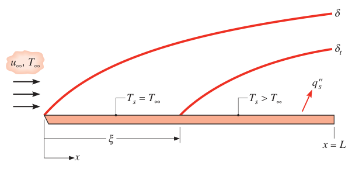
全板长 \(L\) 的平均努塞尔数（层流或湍流覆盖全板）有统一形式：
\(p = 2\) 为层流（\(\left.\overline{Nu}_L\right|_{\xi=0}\) 用式 7.30，\(x\) 换成 \(L\)），\(p = 8\) 为湍流（\(\left.\overline{Nu}_L\right|_{\xi=0}\) 用式 7.38、\(A = 0\)）。注意 \(\overline{h}_L = \overline{Nu}_L\, k/L\) 只对加热段（长 \(L - \xi\)）取平均——算总换热量时要乘加热段面积，例 7.3 演示这一点。
7.2.5 恒热流平板#
均匀表面热流 \(q_s''\)（而非均匀温度）也常见。层流：
湍流：
分别比等壁温结果大 36% 与 4%。有未加热起始段时，把式 (7.45)、(7.46) 与式 (7.42)、(7.43) 组合使用。热流已知时，局部表面温度：
总换热量直接是 \(q = q_s'' A_s\)，不需要平均换热系数。但仍可能想要平均表面温度：
代入式 (7.45) 积分：
式 (7.49) 只比"把式 (7.30) 算在 \(x = L\) 处"大 2%；湍流差异更小。所以等壁温的平均结果配上式 (7.48) 就能估平均壁温。恒热流 + 未加热起始段的平均温度表达式由 Ameel 给出。
7.2.6 使用对流系数的限制#
以上公式适合大多数工程计算，但很少给出精确值：自由流湍流度与表面粗糙度都让实际条件偏离公式假设，误差可达 25%。自由流湍流的影响详见 Blair 的综述。
7.3 对流计算的方法论#
选关联式、用关联式，照六条规则走：
- 立刻认清流动几何。平板、球还是圆柱？关联式的形式由几何决定。
- 定参考温度，按它取物性。边界层温差适中时用膜温度（式 7.2）；有些关联式要求按来流温度取物性、另配物性比参数，照办即可。
- 传质问题里物性取组分 B 的。本章只处理稀薄二元混合物（\(x_{\mathrm{A}} \ll 1\)），混合物物性近似等于组分 B 的物性，如 \(Sc = \nu_{\mathrm{B}}/D_{\mathrm{AB}}\)、\(Re_L = VL/\nu_{\mathrm{B}}\)。
- 算雷诺数。它强烈影响边界层状况；平板问题据此判层流还是湍流。
- 决定要局部系数还是平均系数。等壁温（或等表面组分浓度）条件下，局部系数管某一点的流密度，平均系数管整个表面的传递速率。
- 选合适的关联式。看它许用的 \(Re\)、\(Pr\) 范围与物性温度约定。
【例 7.1】低压热空气平板的冷却速率
已知（Known）：压强 6 kN/m²、温度 300°C 的空气以 10 m/s 流过一块长 0.5 m 的平板。要把板面维持在 27°C，估计需要的冷却速率。
求（Find）：单位板宽的冷却速率 \(q'\)（W/m）。
示意图（Schematic）：
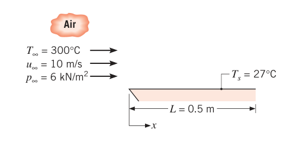
假设（Assumptions）：1. 稳态、不可压流动；2. 辐射忽略。
物性（Properties）：表 A.4，空气（\(T_f = 437\ \mathrm{K}\)，1 atm）：\(\nu = 30.84\times 10^{-6}\ \mathrm{m^2/s}\)，\(k = 36.4\times 10^{-3}\ \mathrm{W/(m\cdot K)}\)，\(Pr = 0.687\)。\(k\)、\(Pr\)、\(c_p\)、\(\mu\) 可视为与压强无关，但理想气体的运动黏度与压强成反比，故 437 K、\(6\times 10^3\ \mathrm{N/m^2}\) 下：
分析（Analysis）：单位宽度平板，由牛顿冷却公式：
先算雷诺数，决定用哪条关联式：
全板层流（\(Re_L < 5\times 10^5\)），用式 (7.30)：
点评（Comments）：1. 表 A.4 的气体物性是 1 atm 下的，压强不同只改 \(\nu\)（理想气体 \(\nu \propto 1/p\)），这一步别忘。2. IHT 软件的 Correlations 与 Properties 工具可以省这类重复计算。
【例 7.2】分段加热器哪一块最耗电
已知（Known）：宽 \(w = 1\ \mathrm{m}\) 的平板由若干独立控温的电加热条维持均匀表面温度 \(T_s = 230^\circ\mathrm{C}\)，每条长 50 mm。1 atm、25°C 的空气以 60 m/s 流过。
求（Find）：哪一条加热器电功率最大？多大？
示意图（Schematic）：
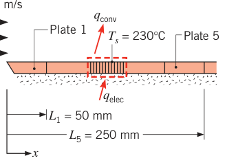
假设（Assumptions）：1. 稳态、不可压流动；2. 辐射忽略；3. 板底面绝热。
物性（Properties）：表 A.4，空气（\(T_f = 400\ \mathrm{K}\)，1 atm）：\(\nu = 26.41\times 10^{-6}\ \mathrm{m^2/s}\)，\(k = 0.0338\ \mathrm{W/(m\cdot K)}\)，\(Pr = 0.690\)。
分析（Analysis）：电功率最大的加热条 = 平均对流系数最大的条。先定位转捩点。第一条加热器长 \(L_1 = 0.05\ \mathrm{m}\)：
取 \(Re_{x,c} = 5\times 10^5\)，则转捩发生在第五条上：
候选有三个：第一条（层流局部系数最大处）、第五条（层流尾部 + 湍流起点，局部系数在转捩处跳升）、第六条（全湍流的条）。每条的能量守恒都是 \(q_{\mathrm{elec}} = q_{\mathrm{conv}}\)。
第一条（全层流，式 7.30）：
第五条 = 前 5 条总量 − 前 4 条总量。前 4 条全层流（\(Re_4 = 4Re_1 = 4.56\times 10^5\)）：
前 5 条是混合边界层，用式 (7.38)（\(A = 871\)，\(Re_5 = 5.70\times 10^5\)）：
第六条 = 前 6 条总量 − 前 5 条总量。前 6 条（\(Re_6 = 6.84\times 10^5\)）：
三者比较：\(q_{\mathrm{conv},6} > q_{\mathrm{conv},1} > q_{\mathrm{conv},5}\)，第六条功率需求最大，为 1440 W。
点评（Comments）：
- 偷懒办法：用条中点的局部系数乘面积。如第六条中点 \(x = 0.275\ \mathrm{m}\) 处，\(Re_x = 6.25\times 10^5\)，\(Nu_x = 1130\)，\(h_x = 139\ \mathrm{W/(m^2\cdot K)}\)，得 \(q_{\mathrm{conv},6} = 1430\ \mathrm{W}\)。这种做法只在系数随距离变化平缓（如湍流段）时勉强可用；跨转捩的区域误差会很大。
- 局部系数分布见下图示意：层流 \(h_x \propto x^{-1/2}\) 在 \(x_c = 0.22\ \mathrm{m}\) 处突然跳升四倍以上，湍流段按 \(x^{-1/5}\) 缓降。自由流湍流度增大或表面粗糙化会使 \(Re_{x,c}\) 减小、转捩前移；增大 \(u_\infty\) 则层流、湍流两条曲线整体抬高（\(h_{\mathrm{lam}} \propto u_\infty^{1/2}\)，\(h_{\mathrm{turb}} \propto u_\infty^{4/5}\)）。
- 本例在 IHT 的 Advanced 部分有完整求解。
【例 7.3】游泳池每天蒸发多少水
已知（Known）：美国西南部干旱，市政官员质疑是否该允许住宅游泳池运行。你是市政工程师，要估算泳池的日蒸发量。代表工况：水温与气温都是 25°C，相对湿度 50%；典型池面 6 m × 12 m，四周有 1.5 m 宽、略高于地面的干燥池台；风沿长边方向吹，2 m/s；自由流湍流度可忽略，水面光滑、与池台齐平。
求（Find）：泳池每天的蒸发失水量（kg/day）。
示意图（Schematic）：
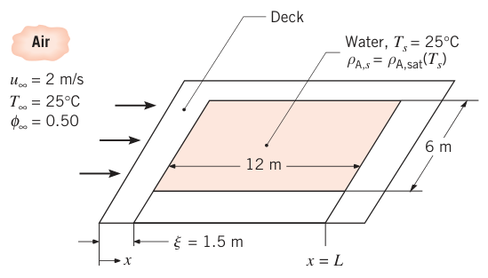
假设（Assumptions）：1. 稳态、不可压流动；2. 水面光滑、自由流湍流忽略；3. 池台干燥；4. 传热传质类比适用；5. 池台前缘把流动绊入湍流；6. 自由流中的水蒸气按理想气体处理。
物性（Properties）：表 A.4，空气（25°C）：\(\nu = 15.7\times 10^{-6}\ \mathrm{m^2/s}\)。表 A.8，水蒸气–空气（25°C）：\(D_{\mathrm{AB}} = 0.26\times 10^{-4}\ \mathrm{m^2/s}\)，\(Sc = \nu/D_{\mathrm{AB}} = 0.60\)。表 A.6，饱和水蒸气（25°C）：\(\rho_{\mathrm{A,sat}} = v_g^{-1} = 0.0226\ \mathrm{kg/m^3}\)。
分析（Analysis）：速度边界层的前缘在池台外缘，所以池的末端距前缘 \(L = 13.5\ \mathrm{m}\)（1.5 m 池台 + 12 m 池长）。该处雷诺数：
对式 (7.44) 作传质类比（\(p = 8\)）：
流动已被池台前缘绊入湍流，故 \(\left.Sh_L\right|_{\xi=0}\) 用式 (7.41) 且 \(A = 0\)（全湍流）：
蒸发速率（\(A\) 只算水面，72 m²，不算池台）：
水面处饱和：\(\rho_{\mathrm{A},s} = \rho_{\mathrm{A,sat}}(T_s)\)；自由流按理想气体与相对湿度：
\(T_s = T_\infty = 25^\circ\mathrm{C}\)，故：
点评（Comments）：
- 蒸发冷却会让水面温度略低于气温——实际蒸发量会略小。
- 按水密度 996 kg/m³ 折算体积损失约 0.4 m³/day，水位每天下降约 6 mm；夏天更狠。
- 池台越长（前缘离水面越远），速度边界层越厚、蒸发越慢——参数计算显示池台加宽单调压低日蒸发量。
7.4 横掠圆柱#
7.4.1 流动考虑#
另一类常见外部流动：流体垂直于圆柱轴线流动（cylinder in cross flow，横掠圆柱）。看图 7.6：来流在前驻点（forward stagnation point）滞止，压强升高；沿流向坐标 \(x\) 前进，压强先降——边界层在顺压梯度（favorable pressure gradient，\(dp/dx < 0\)）里发展。压强降到极小值后回升，圆柱后段的边界层被迫在逆压梯度（adverse pressure gradient，\(dp/dx > 0\)）里发展。
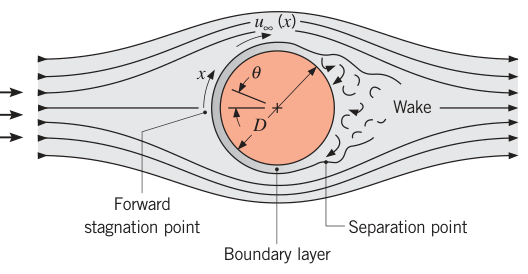
注意区分上游速度 \(V\) 与边界层外缘速度 \(u_\infty(x)\)：与平板不同，横掠圆柱的 \(u_\infty\) 沿程变化。由理想流体的欧拉方程，\(u_\infty(x)\) 的行为与 \(p(x)\) 相反——从前驻点的 0 开始加速（顺压梯度段），在 \(dp/dx = 0\) 处达最大，再被逆压梯度减速。减速到某个位置，壁面速度梯度 \(\partial u/\partial y|_{y=0}\) 变成零（图 7.7）——这就是分离点（separation point）：近壁流体动量耗尽、无力再顶住逆压梯度，又不能倒流回去，边界层只能从表面脱离，下游形成尾迹（wake），其中涡旋生成、流动高度不规则。
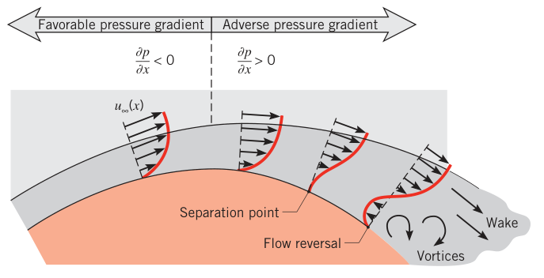
转捩强烈影响分离位置。特征长度取直径：
湍流边界层动量更大，转捩会推迟分离（图 7.8）：\(Re_D \lesssim 2\times 10^5\)，边界层保持层流，分离在 \(\theta_{\mathrm{sep}} \approx 80^\circ\)；\(Re_D \gtrsim 2\times 10^5\)，边界层先转捩成湍流，分离推迟到 \(\theta_{\mathrm{sep}} \approx 140^\circ\)。
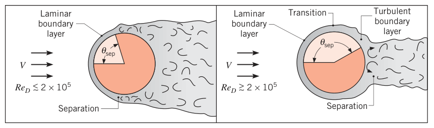
圆柱受到的阻力 \(F_D\) 有两个来源：边界层表面切应力（摩擦阻力，friction drag）与尾迹造成的流动方向压差（形阻/压差阻力，form drag）。无量纲阻力系数（drag coefficient）定义为：
\(A_f\) 是迎风面积（垂直于来流方向的投影面积）。\(C_D\) 随 \(Re_D\) 的变化见图 7.9：\(Re_D \lesssim 2\) 时分离无关紧要、以摩擦阻力为主；\(Re_D\) 增大，分离与形阻越来越重要；\(Re_D \gtrsim 2\times 10^5\) 处 \(C_D\) 骤降——正是边界层转捩推迟分离、尾迹变窄、形阻骤减的表现。
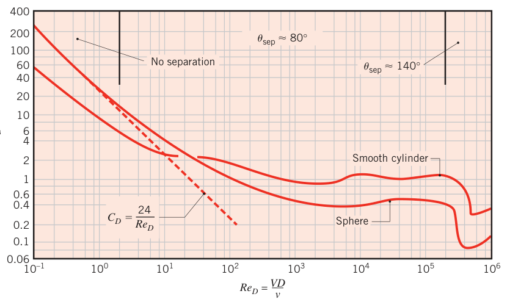
拓展：卡门涡街
一定雷诺数范围内（约 \(Re_D = 60\)–\(5000\)），圆柱尾迹里的涡会交替从两侧脱落，形成规则的涡列——卡门涡街（Karman vortex street）。它让圆柱受到周期性升力，桥梁、烟囱、换热器管子的振动（涡致振动）都源于此。本章的关联式给的是时间平均的换热系数，涡街造成的脉动被平均掉了。
7.4.2 对流换热与传质#
图 7.10 给出空气横掠圆柱时局部努塞尔数随角向位置 \(\theta\) 的变化，边界层发展直接写在了曲线上。看 \(Re_D \lesssim 10^5\) 的情形：从前驻点出发 \(Nu_\theta\) 随 \(\theta\) 下降（层流边界层增厚），在 \(\theta \approx 80^\circ\) 达到极小——分离发生；之后 \(Nu_\theta\) 回升——尾迹里的涡旋掺混强化换热。\(Re_D \gtrsim 10^5\) 时出现两个极小值：从驻点下降仍是层流增厚；\(\theta\) 在 80°–100° 间急剧回升——边界层转捩成湍流；湍流边界层继续发展，\(Nu_\theta\) 再次下降；\(\theta \approx 140^\circ\) 分离，尾迹掺混又把 \(Nu_\theta\) 拉起来。\(Nu_\theta\) 随 \(Re_D\) 整体增大，因为边界层更薄。
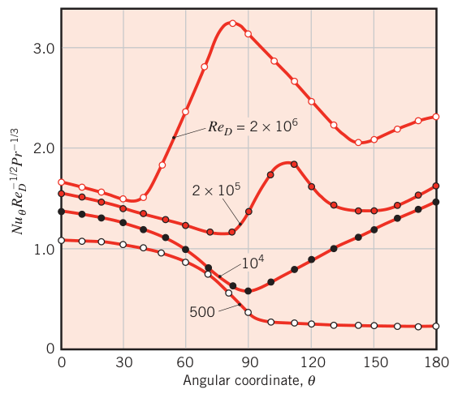
局部关联式：驻点处对 \(Pr \ge 0.6\)、低雷诺数最准的是边界层分析结果：
工程上更关心整根圆柱的平均系数。Hilpert 关联式（经不同 \(Pr\) 流体修正）：
物性取膜温度，常数 \(C\)、\(m\) 查表 7.2；非圆截面柱体也能用（特征长度取 \(D\)，常数查表 7.3）。
表 7.2 式 (7.52) 的常数：横掠光滑圆柱
| \(Re_D\) | \(C\) | \(m\) |
|---|---|---|
| 0.4–4 | 0.989 | 0.330 |
| 4–40 | 0.911 | 0.385 |
| 40–4000 | 0.683 | 0.466 |
| 4000–40 000 | 0.193 | 0.618 |
| 40 000–400 000 | 0.027 | 0.805 |
表 7.3 式 (7.52) 的常数：气体横掠非圆截面柱体
| 几何 | 流向 | \(Re_D\) | \(C\) | \(m\) |
|---|---|---|---|---|
| 正方形（对角迎流） | ◇ | 6000–60 000 | 0.304 | 0.59 |
| 正方形（平面迎流） | □ | 5000–60 000 | 0.158 | 0.66 |
| 六边形（平面迎流） | — | 5200–20 400 | 0.164 | 0.638 |
| 六边形（平面迎流） | — | 20 400–105 000 | 0.039 | 0.78 |
| 六边形（对角迎流） | — | 4500–90 700 | 0.150 | 0.638 |
| 垂直于流动的薄板（迎风面） | — | 10 000–50 000 | 0.667 | 0.500 |
| 垂直于流动的薄板（背风面） | — | 7000–80 000 | 0.191 | 0.667 |
Zukauskas 关联式（物性取 \(T_\infty\)，仅 \(Pr_s\) 取 \(T_s\)）：
\(Pr \le 10\) 时 \(n = 0.37\)，\(Pr \ge 10\) 时 \(n = 0.36\)，常数查表 7.4。
表 7.4 式 (7.53) 的常数：横掠光滑圆柱
| \(Re_D\) | \(C\) | \(m\) |
|---|---|---|
| 1–40 | 0.75 | 0.4 |
| 40–1000 | 0.51 | 0.5 |
| 10³–2×10⁵ | 0.26 | 0.6 |
| 2×10⁵–10⁶ | 0.076 | 0.7 |
Churchill 和 Bernstein 提出了一条覆盖全部可用数据范围的综合关联式（单式通吃）：
推荐用于所有 \(Re_D\, Pr \ge 0.2\)，\(0.7 \le Pr \le 500\)，物性取膜温度。别把任何一条关联式当圣旨：每条只在一定范围内合理，工程精度一般好不过 20%。本书计算优先用式 (7.53) 与 (7.54)（基于更新的、范围更宽的数据）。传质问题照旧类比：\(\overline{Nu}_D \to \overline{Sh}_D\)、\(Pr \to Sc\)；传质边界层内物性变化小，物性比项可忽略。
拓展：低雷诺数极限为什么不是 2
球的关联式在 \(Re_D \to 0\) 时趋于 \(Nu_D = 2\)——静止无限介质中球面导热的精确解（第 4 章表 4.1 案例 1）。圆柱没有这个"2"：二维线源的导热解在无穷远处发散，低 \(Re_D\) 时圆柱的 \(Nu_D\) 缓慢趋于 0，式 (7.54) 的常数 0.3 正是为拟合低雷诺数数据而设。用球公式算圆柱（或反过来）前，先想想这个极限差。
【例 7.4】风洞实验测换热系数，再用关联式验
已知（Known）：直径 12.7 mm、长 94 mm 的金属圆柱装在低速风洞里，内部电加热。某工况：上游风速 \(V = 10\ \mathrm{m/s}\)、气温 \(26.2^\circ\mathrm{C}\)，加热功率 \(P = 46\ \mathrm{W}\)，圆柱平均表面温度 \(128.4^\circ\mathrm{C}\)。估计 15% 的功率经表面辐射与端部导热损失。
求（Find）：1. 由实验数据求对流换热系数；2. 用合适的关联式算对流系数并比较。
示意图（Schematic）：
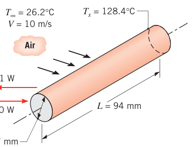
假设（Assumptions）：1. 稳态、不可压流动；2. 圆柱表面温度均匀。
物性（Properties）：表 A.4，空气（\(T_\infty = 26.2^\circ\mathrm{C} \approx 300\ \mathrm{K}\)）：\(\nu = 15.89\times 10^{-6}\ \mathrm{m^2/s}\)，\(k = 26.3\times 10^{-3}\ \mathrm{W/(m\cdot K)}\)，\(Pr = 0.707\)。表 A.4，空气（\(T_f \approx 350\ \mathrm{K}\)）：\(\nu = 20.92\times 10^{-6}\ \mathrm{m^2/s}\)，\(k = 30\times 10^{-3}\ \mathrm{W/(m\cdot K)}\)，\(Pr = 0.700\)。表 A.4，空气（\(T_s = 128.4^\circ\mathrm{C} = 401\ \mathrm{K}\)）：\(Pr = 0.690\)。
分析（Analysis）：
- 由牛顿冷却公式反出实验值。\(q = 0.85P\)，\(A = \pi D L\)：
- 用 Zukauskas 关联式（式 7.53）。物性除 \(Pr_s\) 外全取 \(T_\infty\)：
查表 7.4：\(C = 0.26\)、\(m = 0.6\)；\(Pr = 0.707 \le 10\)，取 \(n = 0.37\)：
用 Churchill–Bernstein（式 7.54，物性取 \(T_f\)）：\(Re_D = 10\times 0.0127/(20.92\times 10^{-6}) = 6071\)，\(Pr = 0.70\)：
用 Hilpert（式 7.52，物性取 \(T_f\)）：\(Re_D = 6071\) 落在 4000–40 000 段，查表 7.2：\(C = 0.193\)、\(m = 0.618\)：
点评（Comments）：
- 风速测量、端部热损失估计、表面温度平均（沿轴向与周向都变）三项误差叠加，实验值准确度不会好于 15%——三条关联式的结果（88、96、105 W/(m²·K)）都落在实验不确定度内。
- 记住教训：取物性的温度必须与关联式约定一致——Zukauskas 用 \(T_\infty\)，Churchill–Bernstein 与 Hilpert 用 \(T_f\)。
【例 7.5】氢燃料车的金属氢化物储氢罐加热
已知（Known）：氢分子量小，气态高压储运不划算时改用金属氢化物粉末吸附储存，用车时加热罐体使氢脱附。脱附氢气在粉末间隙中的压强随氢化物温度变化：
（\(p_{\mathrm{H_2}}\) 单位 atm，\(T\) 单位 K。）脱附是吸热反应，热生成速率：
要求氢压强维持在 1 atm 以上以便供氢。稳态巡航 \(V = 25\ \mathrm{m/s}\) 时燃料电池车耗氢 \(\dot{m}_{\mathrm{H_2}} = 1.35\times 10^{-4}\ \mathrm{kg/s}\)，储罐为圆柱形不锈钢罐：内径 \(D_i = 0.1\ \mathrm{m}\)，长 \(L = 0.8\ \mathrm{m}\)，壁厚 \(t = 0.5\ \mathrm{mm}\)，罐内装金属氢化物粉末。罐体受空气横掠：\(V = 25\ \mathrm{m/s}\)，\(T_\infty = 23^\circ\mathrm{C}\)。
求（Find）：暖风对流供给的热量之外，还需要多少附加加热才能维持 \(p_{\mathrm{H_2}} \ge 1\ \mathrm{atm}\)？
示意图（Schematic）：
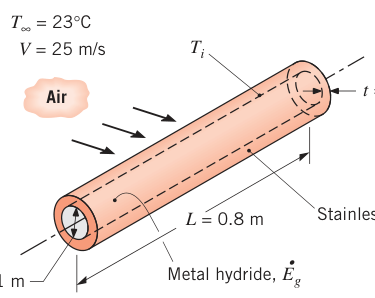
假设（Assumptions）：1. 稳态、不可压流动；2. 圆柱表面温度均匀；3. 端部得热忽略；4. 金属氢化物温度均匀；5. 罐壁与粉末间接触热阻忽略。
物性（Properties）：表 A.4，空气（\(T_f \approx 285\ \mathrm{K}\)）：\(\nu = 14.56\times 10^{-6}\ \mathrm{m^2/s}\)，\(k = 25.2\times 10^{-3}\ \mathrm{W/(m\cdot K)}\)，\(Pr = 0.712\)。表 A.1，AISI 316 不锈钢（\(T_{ss} \approx 300\ \mathrm{K}\)）：\(k_{ss} = 13.4\ \mathrm{W/(m\cdot K)}\)。
分析（Analysis）：先求氢压强恰为 1 atm 时的最低运行温度：
按所需流量脱吸氢气的热生成速率：
（吸热反应，生成速率为负。）对流换热用 Churchill–Bernstein（式 7.54）。按原书数据：
把式 (3.34) 化简，对流得热是"外面对流 + 壁内导热"的串联热阻：
能量平衡 \(q_{\mathrm{add}} + q_{\mathrm{conv}} + \dot{E}_g = 0\)：
原书笔误：例 7.5 的两处数字
其一，题给风速 \(V = 25\ \mathrm{m/s}\)，但原书分析里代入了 23 m/s（疑与 \(T_\infty = 23^\circ\mathrm{C}\) 混淆），得 \(Re_D = 173{,}760\)。按 25 m/s 应为 \(Re_D = 1.89\times 10^5\)、\(\overline{Nu}_D \approx 335\)、\(\overline{h} \approx 77\ \mathrm{W/(m^2\cdot K)}\)、\(q_{\mathrm{conv}} \approx 431\ \mathrm{W}\)、\(q_{\mathrm{add}} \approx 3551\ \mathrm{W}\)。其二，示意图里把壁厚标成 \(t = 0.05\ \mathrm{mm}\)，与题给及分析使用的 0.5 mm 不符，以 0.5 mm 为准。
点评（Comments）：
- 实际上还有辐射、支架与管路导热、罐面水汽凝结等额外得热；燃料电池废热（见例 3.11）也可以拿来给储罐加热。
- 壁内导热热阻 0.0014 K/W、对流热阻 0.053 K/W——对流占绝对主导，罐外加肋片能把对流热阻压下来。
- 车速更高时需要更多附加加热：氢耗量按 \(V^3\) 增长，而 \(h\) 只按 \(V^{0.7}\)–\(V^{0.8}\) 增长；冷天同理。
7.5 横掠球#
球面上的边界层行为与圆柱很像：转捩与分离唱主角。阻力系数仍按式 (7.50) 定义，结果见图 7.9。极低雷诺数（蠕流，creeping flow）时 \(C_D\) 与 \(Re_D\) 成反比——斯托克斯定律（Stokes' law）：
传热关联式很多，Whitaker 推荐的是：
适用范围 \([0.71 \le Pr \le 380;\quad 3.5 \le Re_D \le 7.6\times 10^4;\quad 1.0 \le (\mu/\mu_s) \le 3.2]\)。注意物性混合约定：除 \(\mu_s\) 按表面温度 \(T_s\) 取值外，其余全部按来流温度 \(T_\infty\) 取值。传质版本把 \(\overline{Nu}_D\)、\(Pr\) 换成 \(\overline{Sh}_D\)、\(Sc\)。自由下落的液滴换热的特例常用 Ranz–Marshall 关联式：
物性按 \(T_\infty\) 取。两式在 \(Re_D \to 0\) 时都退化为 \(\overline{Nu}_D = 2\)——球面向静止无限介质的导热（第 4 章表 4.1 案例 1）。
【例 7.6】墨滴飞到电路板前要凉到 50°C
已知（Known）：热喷墨打印机往光伏板上喷导电墨滴（\(D = 55\ \mu\mathrm{m}\)）写电路。墨滴初温 \(T_i = 200^\circ\mathrm{C}\)，要求落到板上时 \(T_{\mathrm{final}} = 50^\circ\mathrm{C}\)。静止空气与四壁 \(T_\infty = T_{\mathrm{sur}} = 25^\circ\mathrm{C}\)，墨滴以终端速度离开喷头。墨滴物性：\(\rho_d = 2400\ \mathrm{kg/m^3}\)，\(c_d = 800\ \mathrm{J/(kg\cdot K)}\)，\(k_d = 5.0\ \mathrm{W/(m\cdot K)}\)。
求（Find）：喷头与光伏板之间的最小距离 \(L\)。
示意图（Schematic）：
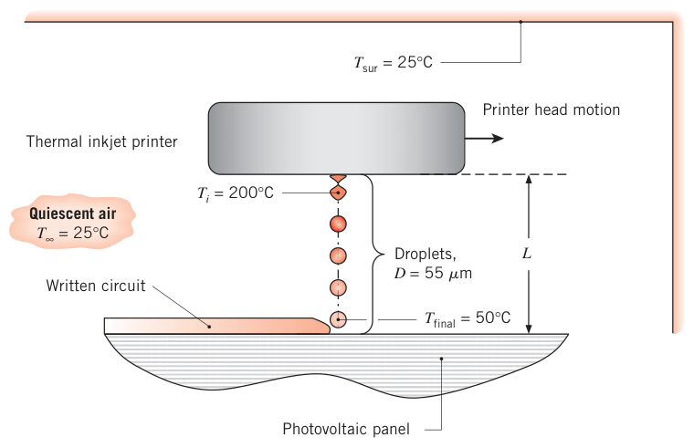
假设（Assumptions）：1. \(Nu\) 用自由下落液滴的 Ranz–Marshall 关联式（式 7.57）；2. 空气物性按 25°C 取常数；3. 辐射忽略；4. 墨滴内部温差忽略（集总近似）；5. 阻力系数由斯托克斯定律描述。
物性（Properties）：表 A.4，空气（\(T_f = 75^\circ\mathrm{C}\)）：\(\rho = 1.002\ \mathrm{kg/m^3}\)，\(\nu = 20.72\times 10^{-6}\ \mathrm{m^2/s}\)。表 A.4，空气（\(T_\infty = 25^\circ\mathrm{C}\)）：\(\nu = 15.71\times 10^{-6}\ \mathrm{m^2/s}\)，\(k = 0.0261\ \mathrm{W/(m\cdot K)}\)，\(Pr = 0.708\)。
分析（Analysis）：墨滴以终端速度飞行，受力平衡：重力 = 浮力 + 阻力：
墨滴小，预计 \(Re_D\) 也小，用斯托克斯定律（式 7.55）：
代入 (1) 解出速度（\(\nu\)、\(\rho\) 取膜温度值）：
校核雷诺数（膜温度）：\(Re_D = 0.190\times 55\times 10^{-6}/(20.72\times 10^{-6}) = 0.506\)，斯托克斯定律适用。\(Nu\) 用 Ranz–Marshall，物性按来流温度（见小结表 7.7 的约定）：
集总电容法（式 5.5）给飞行时间：
点评（Comments）：
- 集总近似的有效性用毕渥数验证（\(L_c = D/2\)）：
- \(Re_D \le 0.5\) 才能用斯托克斯定律；更大的颗粒得查图 7.9 找 \(C_D\)–\(Re_D\) 关系。
- 若墨滴不是以终端速度射出，飞行中会加速或减速，分析更麻烦。
- 辐射真的可以忽略吗？按黑体、初温 \(T_s = 473\ \mathrm{K}\) 保守估计，最大辐射换热系数 \(h_r = \sigma(T_s + T_{\mathrm{sur}})(T_s^2 + T_{\mathrm{sur}}^2) = 13.7\ \mathrm{W/(m^2\cdot K)}\)，远小于 \(\overline{h} = 1160\)，忽略成立。
7.6 横掠管束#
锅炉里产生蒸汽、空调冷凝盘管散热，都是流体横掠一束管子。几何见图 7.11：一种流体横掠管外，另一种流体从管内流过，本节只管管外横掠的换热。
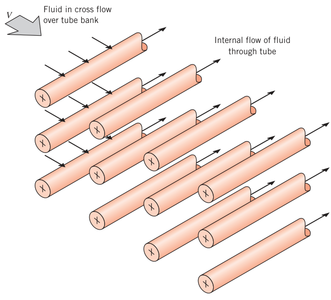
管排沿流速 \(V\) 方向可以顺排（in-line）或错排（staggered，叉排），见图 7.12。几何由管径 \(D\) 与管心距——横向节距（transverse pitch）\(S_T\)、纵向节距（longitudinal pitch）\(S_L\)——完全确定。
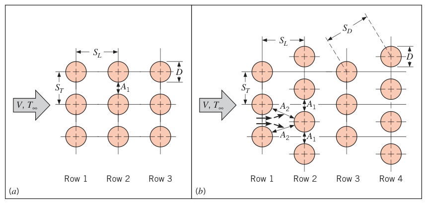
管束内的流动由边界层分离与尾迹相互作用主导。第一排管子的流动与单管横掠类似，换热系数也差不多；下游各排则强烈依赖排列方式（图 7.13）：
- 顺排时，第一排之后的管子都泡在上游管子的尾迹里；中等 \(S_L\) 时下游各排的掺混（湍动）强化换热，各排系数逐排增大，约到第五排后流动状况趋于稳定、系数不再变；\(S_L\) 很大时上游影响弱化，下游不再增强——所以顺排管束 \(S_T/S_L < 0.7\) 不可取。
- 错排时主流路径更曲折，流体掺混比顺排强，换热一般更有利，尤其是低雷诺数（\(Re_D \lesssim 100\)）。
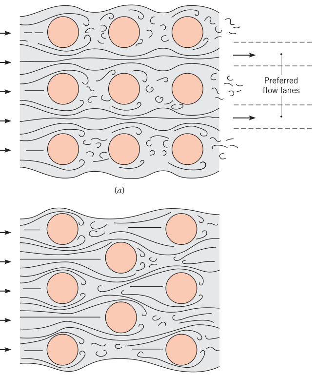
通常要的是整束管的平均换热系数。Zukauskas 关联式：
\(N_L\) 是管排数；物性除 \(Pr_s\)（按 \(T_s\)）外全取流体进、出口温度的算术平均 \((T_i + T_o)/2\)——流体横掠管束时温度必然变，进出口温差大时按入口温度取物性会引入显著误差。\(C_1\)、\(m\) 查表 7.5。
表 7.5 式 (7.58) 的常数
| 排列 | \(Re_{D,\max}\) | \(C_1\) | \(m\) |
|---|---|---|---|
| 顺排 | 10–10² | 0.80 | 0.40 |
| 错排 | 10–10² | 0.90 | 0.40 |
| 顺排 | 10²–10³ | 按（孤立）单管处理 | 按（孤立）单管处理 |
| 错排 | 10²–10³ | 按（孤立）单管处理 | 按（孤立）单管处理 |
| 顺排（\(S_T/S_L \ge 0.7\)） | 10³–2×10⁵ | 0.27 | 0.63 |
| 错排（\(S_T/S_L \le 2\)） | 10³–2×10⁵ | \(0.35\,(S_T/S_L)^{1/5}\) | 0.60 |
| 错排（\(S_T/S_L \ge 2\)） | 10³–2×10⁵ | 0.40 | 0.60 |
| 顺排 | 2×10⁵–2×10⁶ | 0.021 | 0.84 |
| 错排 | 2×10⁵–2×10⁶ | 0.022 | 0.84 |
排数少于 20 时平均换热系数偏低，乘排数修正因子：
\(C_2\) 查表 7.6（适用于 \(Re_{D,\max} \ge 10^3\)）。
表 7.6 式 (7.59) 的修正因子 \(C_2\)
| \(N_L\) | 1 | 2 | 3 | 4 | 5 | 7 | 10 | 13 | 16 |
|---|---|---|---|---|---|---|---|---|---|
| 顺排 | 0.70 | 0.80 | 0.86 | 0.90 | 0.92 | 0.95 | 0.97 | 0.98 | 0.99 |
| 错排 | 0.64 | 0.76 | 0.84 | 0.89 | 0.92 | 0.95 | 0.97 | 0.98 | 0.99 |
关联式用的 \(Re_{D,\max}\) 基于管束内的最大流速。顺排时最大流速出现在横向截面 \(A_1\)（图 7.12a），由不可压流体的质量守恒：
错排时最大流速可能出现在横向截面 \(A_1\)，也可能出现在对角截面 \(A_2\)（图 7.12b）。当对角截面的净空更窄，即
时，流体从 \(A_1\) 面到 \(A_2\) 面要一分为二（分流的"2"就在这里），最大流速出现在 \(A_2\)：
否则仍按式 (7.60) 算。
流体横掠管束温度变化可能很大，牛顿冷却公式里若仍用 \(T_s - T_\infty\) 会显著高估换热量——流体越走越接近 \(T_s\)、温差越缩越小。第 8 章会证明，正确的温差是对数平均温差（log mean temperature difference）：
出口温度（算 \(\Delta T_{\mathrm{lm}}\) 要用）由能量平衡估计：
\(N\) 是管束总管数，\(N_T\) 是每排管数。单位管长的换热速率：
特定 \(S_T/D\)、\(S_L/D\) 的更多结果见 Zukauskas 与 Grimison（后者仅限空气，两者在宽 \(Re_{D,\max}\) 范围内彼此差约 15%）。管束同样可做传质类比。
压降与换热量同等重要——驱动流体横掠管束的功率是主要运行成本，正比于压降：
摩擦因子 \(f\) 与修正因子 \(\chi\) 由图 7.14、7.15 查取：图 7.14 适用于正方形顺排（\(P_L = S_L/D = P_T = S_T/D\)），内嵌的 \(\chi\) 图把结果推广到其他顺排排列；图 7.15 适用于等边三角形错排（\(S_D = S_T\)），\(\chi\) 图推广到其他错排排列。两张图的雷诺数都基于 \(V_{\max}\)。
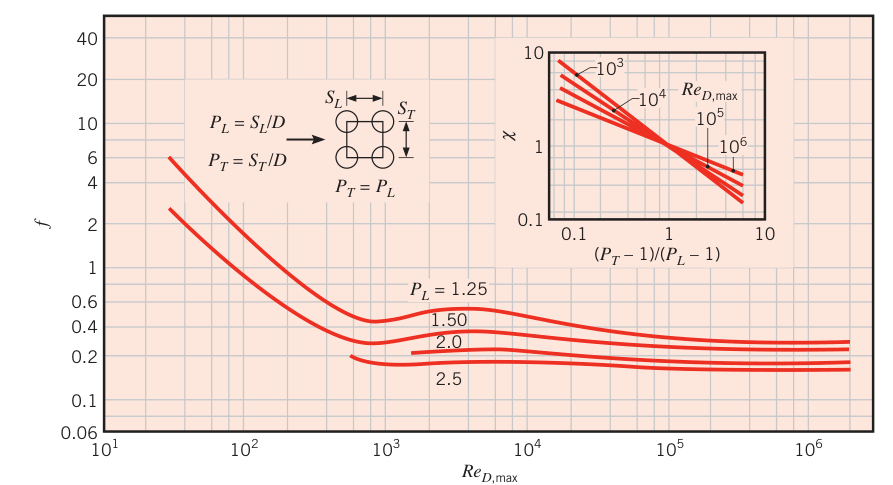
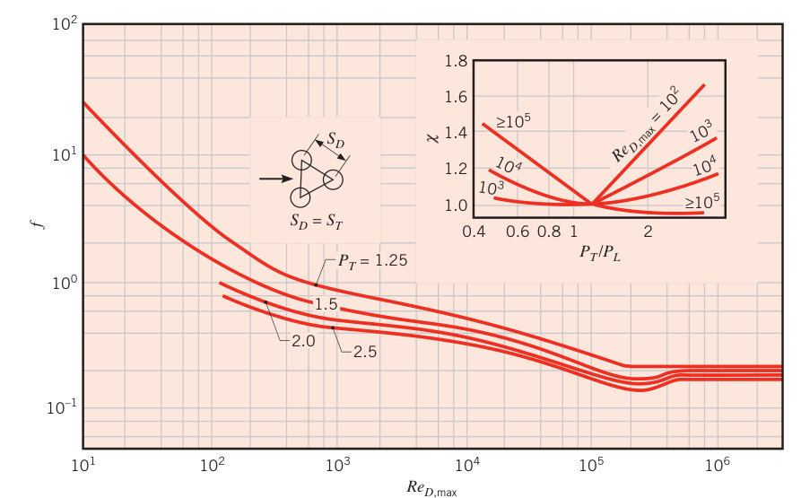
【例 7.7】错排管束的换热与压降
已知（Known）：高压热水用于采暖或工业加热：热水走管内，空气横掠管外。错排管束：管外径 \(D = 16.4\ \mathrm{mm}\)，\(S_L = 34.3\ \mathrm{mm}\)，\(S_T = 31.3\ \mathrm{mm}\)；沿气流方向 7 排，每排 8 根。典型工况：管壁 \(70^\circ\mathrm{C}\)，来流空气 \(15^\circ\mathrm{C}\)、\(6\ \mathrm{m/s}\)。
求（Find）：1. 空气侧对流系数与换热速率；2. 空气侧压降。
示意图（Schematic）：
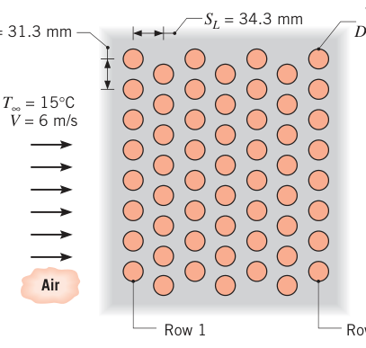
假设（Assumptions）：1. 稳态、不可压流动；2. 辐射忽略；3. 空气温度跨管束的变化对物性的影响忽略。
物性（Properties）：表 A.4，空气（\(T_\infty = 15^\circ\mathrm{C}\)）：\(\rho = 1.217\ \mathrm{kg/m^3}\)，\(c_p = 1007\ \mathrm{J/(kg\cdot K)}\)，\(\nu = 14.82\times 10^{-6}\ \mathrm{m^2/s}\)，\(k = 0.0253\ \mathrm{W/(m\cdot K)}\)，\(Pr = 0.710\)。表 A.4，空气（\(T_s = 70^\circ\mathrm{C}\)）：\(Pr = 0.701\)。表 A.4，空气（\(T_f = 43^\circ\mathrm{C}\)）：\(\nu = 17.4\times 10^{-6}\ \mathrm{m^2/s}\)，\(k = 0.0274\ \mathrm{W/(m\cdot K)}\)，\(Pr = 0.705\)。
分析（Analysis）：
- 由式 (7.58)、(7.59)：
先判最大流速位置。\(S_D = \left[S_L^2 + (S_T/2)^2\right]^{1/2} = 37.7\ \mathrm{mm} > (S_T + D)/2 = 23.85\ \mathrm{mm}\)，故最大流速在横向截面 \(A_1\)，用式 (7.60)：
查表：\(S_T/S_L = 31.3/34.3 = 0.91 \le 2\)，故 \(C_1 = 0.35\,(S_T/S_L)^{1/5} = 0.34\)、\(m = 0.60\)；\(N_L = 7\) 排，查表 7.6 得 \(C_2 = 0.95\)。代入（物性按 \(T_i\) 近似，见点评 2）：
由式 (7.63) 求出口温度：
由式 (7.62)、(7.64)：
- 压降用式 (7.65)。\(Re_{D,\max} = 13{,}943\)，\(P_T = S_T/D = 1.91\)，\(P_L = S_L/D = 2.09\)，\(P_T/P_L = 0.91\)，查图 7.15 得 \(\chi \approx 1.04\)、\(f \approx 0.35\)。\(N_L = 7\)：
点评（Comments）：
- 若式 (7.64) 里用 \(T_s - T_i\) 代替 \(\Delta T_{\mathrm{lm}}\)，换热量会高估 11%——对数平均温差不是装饰品。
- 空气只升温 10.5°C，物性按 \(T_i = 15^\circ\mathrm{C}\) 取是合理近似；要更准就按 \((T_i + T_o)/2 = 20.25^\circ\mathrm{C}\) 重取物性重算。唯独式 (7.63) 指数分母里的 \(\rho\) 必须按 \(T_i\) 取——它和入口速度配成 \(\rho V\)，对应进入管束的空气质量流量。
- 加排数可以抬高出口温度与换热量；排数固定时调风速也能调。\(5 \le N_L \le 25\)、\(V = 6\ \mathrm{m/s}\) 的参数计算显示：\(N_L\) 增大时出口温度渐近逼近壁温 \(70^\circ\mathrm{C}\)，换热量趋于常数——再加排没收益；\(\Delta p\) 随 \(N_L\) 线性涨。\(N_L = 25\)、\(1 \le V \le 20\ \mathrm{m/s}\) 时：换热量随 \(V\) 增大，但出口温度一路降，\(V \to \infty\) 时趋回 \(T_i\)。
7.7 冲击射流#
7.7.1 流动与几何考虑#
单股或多股气体射流垂直冲击表面（impinging jet，冲击射流），能拿到很高的对流系数——用于玻璃淬火、金属板退火、纺织与纸张干燥、燃气轮机部件冷却、飞机除冰等。
流动结构看图 7.16：射流从圆喷嘴（直径 \(D\)）或缝喷嘴（宽 \(W\)）喷入静止环境。喷口处速度剖面均匀；随着离喷口越来越远，射流与环境流体交换动量，自由边界展宽，势流核心（potential core）——保留出口均匀速度的区域——逐渐收缩。势核之后整个横截面速度分布不再均匀，最大（中心）速度随距离衰减。不受冲击表面影响的区域叫自由射流（free jet）。
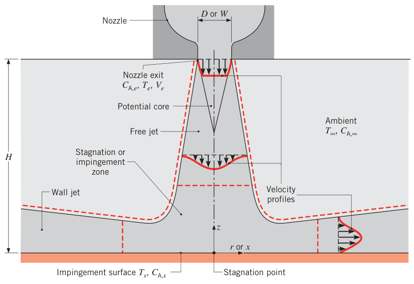
滞止区/冲击区（stagnation or impingement zone）内，流动受靶面影响：法向（\(z\)）减速、横向（\(r\) 或 \(x\)）加速。但环境零动量流体不断被卷吸进来，横向加速不可能无限继续——加速的滞止流转变为减速的壁面射流（wall jet）。所以沿表面，切向速度从零升到某个最大值，再衰减回零；壁面射流内速度剖面在冲击面与自由面两处都为零。\(T_s \neq T_e\)（和/或 \(C_{\mathrm{A},s} \neq C_{\mathrm{A},e}\)）时，滞止区与壁面射流区都发生对流换热（传质）。
阵列布置（图 7.17 的缝喷嘴阵列）最常见。除了每股射流的自由段、滞止区、壁面射流，相邻壁面射流相互作用还产生二次滞止区。很多方案里射流喷入由靶面与喷嘴板围成的受限空间，总换热速率强烈依赖废气（spent gas，温度/浓度介于喷口与表面之间）怎么排出。图 7.17 的构型废气不能从喷嘴之间向上排，只能对称地沿 \(\pm y\) 排走：越往 \(|y|\) 大处，气体越热（表面冷却越弱），局部温差越小，局部热流密度随之下降。更好的做法：相邻喷嘴之间的空间对环境开放，让废气连续向上直接排出。
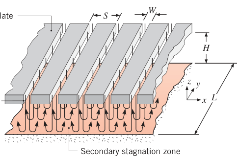
图 7.18 是单圆/缝喷嘴与规则阵列的俯视图。孤立喷嘴（图 7.18a、d）上处处有局部与平均系数；阵列则以虚线围出的单元胞（unit cell）为对称单元。大数量方形顺排（图 7.18b）或等边错排（图 7.18c）圆射流的单元胞分别是正方形与正六边形。关键几何参数是相对喷嘴面积（relative nozzle area）\(A_r \equiv A_{c,e}/A_{\mathrm{cell}}\)（喷口截面积/单元胞表面积），\(S\) 为阵列节距。
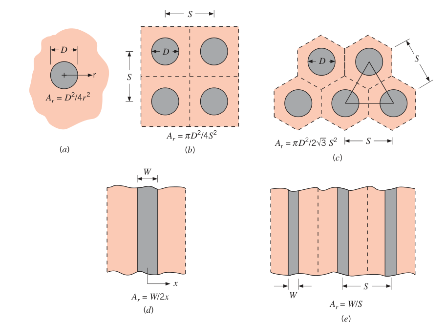
7.7.2 对流换热与传质#
设射流出口速度 \(V_e\)、温度 \(T_e\)、组分浓度 \(C_{\mathrm{A},e}\) 都均匀，且与环境热平衡、组分平衡（\(T_e = T_\infty\)，\(C_{\mathrm{A},e} = C_{\mathrm{A},\infty}\)）；冲击表面温度（浓度）均匀。牛顿冷却公式及其传质类比：
假定条件不受喷口湍流度影响、表面静止（表面速度远小于射流冲击速度时可放宽）。Martin 汇总了大量数据。特征长度取喷嘴水力直径（hydraulic diameter）\(D_h \equiv 4 A_{c,e}/P\)：圆喷嘴即 \(D\)，缝喷嘴（\(L \gg W\)）为 \(2W\)。于是 \(Nu = \overline{h} D_h/k\)，\(Re = V_e D_h/\nu\)。关联式统一写成：
局部分布见图 7.19。大间距（\(H/D_h \gtrsim 5\)）：钟形曲线，\(Nu\) 从驻点最大值单调衰减。小间距（\(H/D_h \lesssim 5\)）：出现第二峰值，其值随射流雷诺数增大、可能超过第一峰。阈值 \(H/D \approx 5\) 与势流核心长度大致对应：第二峰归因于"加速的滞止流转变为减速的壁面射流"时湍流度的骤升。阵列里相邻壁面射流相互作用也会造成第二峰；分布是二维的（缝阵列沿 \(x\)、\(y\) 都有变化），但出流截面够大时（\(S\times H \ge W\times L\)）沿 \(y\) 的变化可忽略。
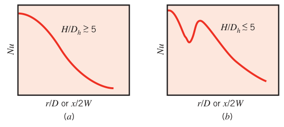
拓展：第二峰从哪来
主流解释：滞止区流体沿表面加速、边界层越来越薄（\(h\) 升），到壁面射流段转为减速、边界层增厚（\(h\) 降）——转换点附近湍流度骤增，形成第二个峰。势核长度（约 5–8 倍喷嘴直径）决定这个结构是否来得及打到板上：\(H/D \gtrsim 5\) 时射流中心速度已衰减，第二峰被抹平。
关联式。物性取膜温度。单圆喷嘴（\(A_r = D^2/4r^2\)，对 \(0 \le r \le r_0\) 平均）：
适用范围 \([2000 \le Re \le 4\times 10^5;\quad 2 \le H/D \le 12;\quad 0.004 \le A_r \le 0.04]\)。\(A_r \ge 0.04\) 时有图线可用。
圆喷嘴阵列（顺排 \(A_r = \pi D^2/4S^2\)，错排 \(A_r = \pi D^2/2\sqrt{3}\, S^2\)）：
\(G\) 仍是单喷嘴函数（式 7.72）。\(K\) 反映"\(H/D\) 超过 \(0.6/A_r^{1/2}\) 后，阵列的平均 \(Nu\) 随 \(H/D\) 衰减得比单喷嘴快"。适用范围 \([2000 \le Re \le 10^5;\quad 2 \le H/D \le 12;\quad 0.004 \le A_r \le 0.04]\)。
单缝喷嘴（\(A_r = W/2x\)）：
适用范围 \([3000 \le Re \le 9\times 10^4;\quad 2 \le H/W \le 10;\quad 0.025 \le A_r \le 0.125]\)。作为一级近似，式 (7.75) 可外推到 \(A_r \ge 0.125\)（驻点 \(x = 0\)、\(A_r \to \infty\) 处预测值与实测差 40% 以内）。
缝喷嘴阵列（\(A_r = W/S\)）：
适用于废气只能沿 \(\pm y\) 排走、且出流面积够大（\((S\times H)/(W\times L) \ge 1\)）的情形；范围 \([1500 \le Re \le 4\times 10^4;\quad 2 \le H/W \le 80;\quad 0.008 \le A_r \le 2.5\, A_{r,o}]\)。
最优设计：给定单位靶面总面积的气体总流量，求 \(H\)、\(S\)、\(D_h\) 使 \(\overline{Nu}\) 最大。\(H\) 固定时，圆、缝阵列的最优值为：
\((D_h/H)^{-1} \approx 5\) 大致就是势流核心长度——出了势核，中线射流速度衰减，对流系数跟着降。
传质类比照做（\(\overline{Nu}/Pr^{0.42} \to \overline{Sh}/Sc^{0.42}\)）。但有几条限制：关联式只对钟形（bell-shaped）喷嘴成立，锐边孔口（sharp-edged orifice）的射流受流束收缩（flow contraction）影响，不能用；\(T_e \neq T_\infty\) 时牛顿冷却公式里的 \(T_e\) 要换成恢复温度（recovery temperature，或绝热壁温度）；小喷嘴、窄缝需要极高的 \(V_e\) 才能落进关联式的 \(Re\) 范围，当 \(V_e/a > 0.3\)（马赫数超 0.3）时压缩性效应显著，本节关联式失效。液体的射流冲击、火焰射流冲击与非平面表面冲击另有专门关联式。
7.8 堆积床#
气体流过固体颗粒堆积床（packed bed，又称填充床/固定床，图 7.20），用在储热与放热、多相催化反应、干燥等工业过程。堆积床指颗粒位置固定；与之相对，颗粒随流体一起运动的是流化床（fluidized bed）。
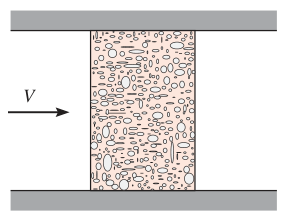
堆积床的卖点：小体积里塞进大量换热/传质表面，且空隙里的不规则流动靠掺混强化输运。文献里针对不同颗粒形状、尺寸与堆积密度有大量关联式；对球颗粒气固床推荐：
\(\overline{j}_H\)、\(\overline{j}_m\) 是科尔伯恩 j 因子（式 6.70、6.71）；雷诺数 \(Re_D = V D/\nu\) 按球径与空塔速度（upstream velocity \(V\)，即没有填料时空通道里的来流速度）定义；\(\varepsilon\) 是床的孔隙率（porosity，或空隙率 void fraction，空隙体积/床体积），典型 0.30–0.50。非球形填料乘修正因子：长径比 1 的等尺寸圆柱床乘 0.79，立方体床乘 0.71。物性取进、出口流体温度的算术平均。
颗粒温度均匀为 \(T_s\) 时，整床换热速率：
\(A_{p,t}\) 是颗粒总表面积，\(\Delta T_{\mathrm{lm}}\) 仍是式 (7.62) 的对数平均温差；出口温度：
\(\rho\)、\(V\) 按入口取，\(A_{c,b}\) 是床（通道）横截面积。
拓展：j 因子关联式怎么用
式 (7.81) 左边的 \(\varepsilon\) 容易漏写：\(j_H = \overline{St}\, Pr^{2/3}\) 里的 \(\overline{St} = \overline{h}/(\rho V c_p)\) 用的是空塔速度 \(V\)，而床内真实流速是 \(V/\varepsilon\)——孔隙率把"空隙里流速更高"这笔账一并算掉。拿到 \(j_H\) 后反解 \(\overline{h} = \overline{j}_H\, \rho V c_p\, Pr^{-2/3}\)，再配上 \(A_{p,t}\)（单位床体积的颗粒表面积约 \(6(1-\varepsilon)/D\)）就能出整床换热量。
7.9 小结#
本章把外部流动的强制对流换热/传质串了一遍：外部流动 = 边界层自由发展、外围有无梯度区；换热系数由边界层发展方式决定。平板层流有精确解，其余几何靠实验关联式；所有关联式的使用要点是六步方法论 + 适用范围 + 参考温度约定。最后用表 7.7 把全部关联式收进一张速查表。
表 7.7 外部流动对流换热关联式汇总
| 关联式 | 几何 | 条件 |
|---|---|---|
| \(\delta = 5x\, Re_x^{-1/2}\)（式 7.19） | 平板 | 层流，\(T_f\) |
| \(C_{f,x} = 0.664\, Re_x^{-1/2}\)（式 7.20） | 平板 | 层流，局部，\(T_f\) |
| \(\overline{Nu}_x = 0.332\, Re_x^{1/2}\, Pr^{1/3}\)（式 7.23） | 平板 | 层流，局部，\(T_f\)，\(Pr \ge 0.6\) |
| \(\delta/\delta_t \approx Pr^{1/3}\)（式 7.24） | 平板 | 层流，\(T_f\) |
| \(\overline{C}_{f,x} = 1.328\, Re_x^{-1/2}\)（式 7.29） | 平板 | 层流，平均，\(T_f\) |
| \(\overline{Nu}_x = 0.664\, Re_x^{1/2}\, Pr^{1/3}\)（式 7.30） | 平板 | 层流，平均，\(T_f\)，\(Pr \ge 0.6\) |
| \(\overline{Nu}_x = 0.564\, Pe_x^{1/2}\)（式 7.32） | 平板 | 层流，局部，\(T_f\)，\(Pr \lesssim 0.05\)，\(Pe_x \ge 100\) |
| \(C_{f,x} = 0.0592\, Re_x^{-1/5}\)（式 7.34） | 平板 | 湍流，局部，\(T_f\)，\(Re_x \le 10^8\) |
| \(\delta = 0.37x\, Re_x^{-1/5}\)（式 7.35） | 平板 | 湍流，\(T_f\)，\(Re_x \le 10^8\) |
| \(\overline{Nu}_x = 0.0296\, Re_x^{4/5}\, Pr^{1/3}\)（式 7.36） | 平板 | 湍流，局部，\(T_f\)，\(Re_x \le 10^8\)，\(0.6 \le Pr \le 60\) |
| \(\overline{Nu}_L = (0.037\, Re_L^{4/5} - 871)\, Pr^{1/3}\)（式 7.38） | 平板 | 混合，平均，\(T_f\)，\(Re_{x,c} = 5\times 10^5\)，\(Re_L \le 10^8\)，\(0.6 \le Pr \le 60\) |
| \(\overline{C}_{f,L} = 0.074\, Re_L^{-1/5} - 1742\, Re_L^{-1}\)（式 7.40） | 平板 | 混合，平均，\(T_f\)，\(Re_{x,c} = 5\times 10^5\)，\(Re_L \le 10^8\) |
| \(\overline{Nu}_D = C\, Re_D^m\, Pr^{1/3}\)（式 7.52，表 7.2） | 圆柱 | 平均，\(T_f\)，\(0.4 \le Re_D \le 4\times 10^5\)，\(Pr \ge 0.7\) |
| \(\overline{Nu}_D = C\, Re_D^m\, Pr^n\, (Pr/Pr_s)^{1/4}\)（式 7.53，表 7.4） | 圆柱 | 平均，\(T_\infty\)，\(1 \le Re_D \le 10^6\)，\(0.7 \le Pr \le 500\) |
| 式 (7.54) Churchill–Bernstein | 圆柱 | 平均，\(T_f\)，\(Re_D Pr \ge 0.2\) |
| 式 (7.56) Whitaker | 球 | 平均，\(T_\infty\)，\(3.5 \le Re_D \le 7.6\times 10^4\)，\(0.71 \le Pr \le 380\)，\(1.0 \le \mu/\mu_s \le 3.2\) |
| \(\overline{Nu}_D = 2 + 0.6\, Re_D^{1/2}\, Pr^{1/3}\)（式 7.57） | 下落液滴 | 平均，\(T_\infty\) |
| \(\overline{Nu}_D = C_1 C_2\, Re_{D,\max}^{m}\, Pr^{0.36}\, (Pr/Pr_s)^{1/4}\)（式 7.58、7.59，表 7.5、7.6） | 管束 | 平均，\(\overline{T} = (T_i + T_o)/2\)，\(10 \le Re_{D,\max} \le 2\times 10^6\)，\(0.7 \le Pr \le 500\) |
| 式 (7.71) | 冲击射流，单圆喷嘴 | 平均，\(T_f\)，\(2000 \le Re \le 4\times 10^5\)，\(2 \le H/D \le 12\)，\(2.5 \le r/D \le 7.5\) |
| 式 (7.75) | 冲击射流，单缝喷嘴 | 平均，\(T_f\)，\(3000 \le Re \le 9\times 10^4\)，\(2 \le H/W \le 10\)，\(4 \le x/W \le 20\) |
| 式 (7.73) | 冲击射流，圆喷嘴阵列 | 平均，\(T_f\)，\(2000 \le Re \le 10^5\)，\(2 \le H/D \le 12\)，\(0.004 \le A_r \le 0.04\) |
| 式 (7.77) | 冲击射流，缝喷嘴阵列 | 平均，\(T_f\)，\(1500 \le Re \le 4\times 10^4\)，\(2 \le H/W \le 80\)，\(0.008 \le A_r \le 2.5 A_{r,o}\) |
| \(\varepsilon\, \overline{j}_H = \varepsilon\, \overline{j}_m = 2.06\, Re_D^{-0.575}\)（式 7.81） | 堆积床（球） | 平均，\(\overline{T} = (T_i + T_o)/2\)，\(90 \le Re_D \le 4000\)，\(Pr\)（或 \(Sc\)）\(\ge 0.7\) |
适用面注记：表中关联式都按等温表面给出；未加热起始段与恒热流的特例见 7.2.4、7.2.5 节。传热传质类比适用时，把 \(Nu\)、\(Pr\) 换成 \(Sh\)、\(Sc\) 即得传质关联式。"条件"列的温度即物性取值温度。
坑与陷阱#
8 个容易踩的坑
- 参考温度（物性温度）张冠李戴：平板全部关联式与 Churchill–Bernstein、Hilpert 用膜温度 \(T_f\)；圆柱的 Zukauskas 式 (7.53) 与球的 Whitaker 式 (7.56) 用 \(T_\infty\)（只把 \(Pr_s\) 或 \(\mu_s\) 留给表面温度）；管束与堆积床用进出口平均温度 \((T_i + T_o)/2\)。例 7.4 点评 2 就是反面教材。
- 雷诺数里的速度与长度要按约定：平板用 \(x\) 或 \(L\) 与来流速度；圆柱、球用直径 \(D\)；管束必须用最大流速 \(V_{\max}\)（顺排 \(S_T/(S_T-D)V\)，错排看对角截面是否更窄）；堆积床用空塔速度 \(V\)。低压气体先做 \(\nu \propto 1/p\) 的压力修正（例 7.1）。
- 混合边界层别整板按一种流态算：\(x_c/L \lesssim 0.95\) 就得用式 (7.38)（\(A = 871\)）分段积分；全按层流会低估、全按湍流会高估换热。绊线（turbulence promoter）能把边界层人为掰成全湍流（\(A = 0\)）。
- 未加热起始段的平均系数只属于加热段：式 (7.44) 的 \(\overline{Nu}_L\) 对应的 \(\overline{h}_L\) 只对长 \(L-\xi\) 的加热段平均，算总热量乘加热段面积，别乘全板面积（例 7.3）。
- 恒热流与等壁温的式子不能混抄：层流恒热流 \(0.453\) 比等壁温 \(0.332\) 大 36%，湍流差 4%。反过来，算平均壁温用式 (7.48)、(7.49)（\(0.680\)），不是把等壁温 \(Nu\) 反着代。
- 管束换热量必须用对数平均温差：流体横掠管束温度一路逼近 \(T_s\)，用入口温差会高估 11%（例 7.7 点评 1）；出口温度由式 (7.63) 迭代，其中 \(\rho\) 按入口温度取。
- 局部系数的角向分布别背反：低 \(Re_D\) 圆柱一个极小值（分离点 80°）；高 \(Re_D\) 两个极小值（转捩回升前、分离 140° 前）。设计"哪里换热最差"要按这个图（图 7.10）说话。
- 关联式不是精确解：湍流摩擦式 ±15%，外部流动关联式整体 ±20–25%，超出适用范围的外推更没谱。算出比实验"准"到个位数的结果，先怀疑用错了式子或物性温度。
速览#
- 外部流动：边界层自由发展，外围有梯度可忽略区。经验关联式一律写成 \(Nu = C\, Re^m\, Pr^n\)（式 7.1）；变物性两条路：膜温度 \(T_f = (T_s + T_\infty)/2\)（式 7.2）或来流物性 + 物性比 \((Pr/Pr_s)^r\)。
- 平板层流（等壁温，\(Pr \ge 0.6\)，相似解）：局部 \(Nu_x = 0.332\, Re_x^{1/2} Pr^{1/3}\)（式 7.23），平均 \(0.664\, Re_x^{1/2} Pr^{1/3}\)（式 7.30）——平均恒为局部的 2 倍；\(\delta = 5x/Re_x^{1/2}\)，\(\delta/\delta_t \approx Pr^{1/3}\)；\(C_{f,x} = 0.664\, Re_x^{-1/2}\)。
- 液态金属（\(Pr \lesssim 0.05\)）：\(Nu_x = 0.564\, Pe_x^{1/2}\)（式 7.32）；全 \(Pr\) 通用 Churchill–Ozoe 式 (7.33)。
- 平板湍流：\(C_{f,x} = 0.0592\, Re_x^{-1/5}\)（式 7.34），\(\delta = 0.37x\, Re_x^{-1/5}\)，\(\delta \approx \delta_t \approx \delta_c\)，\(Nu_x = 0.0296\, Re_x^{4/5} Pr^{1/3}\)（式 7.36）。
- 混合边界层（\(Re_{x,c} = 5\times 10^5\)）：\(\overline{Nu}_L = (0.037\, Re_L^{4/5} - 871) Pr^{1/3}\)（式 7.38）；湍流段积分前先扣掉层流段的贡献，这就是 \(A\) 的物理含义。
- 未加热起始段：局部修正式 (7.42)、(7.43)，平均修正式 (7.44)（\(p = 2\) 层流、\(p = 8\) 湍流）；\(\overline{h}\) 只覆盖加热段。
- 恒热流：层流 \(Nu_x = 0.453\, Re_x^{1/2} Pr^{1/3}\)（比等壁温大 36%），湍流 0.0308（大 4%）；局部壁温 \(T_s(x) = T_\infty + q_s''/h_x\)。
- 横掠圆柱：顺压–逆压梯度、分离点 80°（层流）/140°（湍流）；平均 \(Nu\) 用 Zukauskas 式 (7.53) 或 Churchill–Bernstein 式 (7.54)；驻点 \(Nu = 1.15\, Re_D^{1/2} Pr^{1/3}\)；局部 \(Nu_\theta\) 的双极小是"转捩 + 分离"两个事件的指纹。
- 横掠球：Whitaker 式 (7.56)（\((\mu/\mu_s)^{1/4}\)、物性取 \(T_\infty\)）；落滴 Ranz–Marshall 式 (7.57)；\(Re_D \to 0\) 时 \(Nu_D = 2\)（导热极限）。蠕流阻力 \(C_D = 24/Re_D\)。
- 横掠管束：Zukauskas 式 (7.58)（物性取 \((T_i+T_o)/2\)）+ 排数修正 \(C_2\)；\(Re_{D,\max}\) 的 \(V_{\max}\) 顺排看 \(A_1\) 面、错排先判对角面；换热量用 \(\Delta T_{\mathrm{lm}}\)（式 7.62）+ 出口温度（式 7.63）；压降 \(\Delta p = N_L \chi\, \rho V_{\max}^2 f/2\)。冲击射流：势核长度约 \(5D\)，\(H/D \lesssim 5\) 出现第二峰；最优 \(D_h \approx 0.2H\)、\(S \approx 1.4H\)。堆积床：\(\varepsilon j_H = 2.06\, Re_D^{-0.575}\)。
术语速查#
| 英文 | 中文 | 一句话 |
|---|---|---|
| external flow | 外部流动 | 边界层自由发展、外围有均匀来流区的流动 |
| empirical correlation | 经验关联式 | 实验数据拟合出的无量纲幂律 \(Nu = C Re^m Pr^n\) |
| film temperature | 膜温度 | \(T_f = (T_s + T_\infty)/2\)，边界层平均温度，常用作取物性的参考温度 |
| similarity solution | 相似解 | 速度/温度剖面形状不变、只用单一变量 \(\eta\) 描述的解 |
| mixed boundary layer | 混合边界层 | 同一块板上层流段加湍流段并存，平均系数要分段积分 |
| unheated starting length | 未加热起始段 | 加热段之前的等温段，热边界层推迟 \(\xi\) 才起步 |
| transition | 转捩 | 层流边界层失稳转变为湍流，临界雷诺数 \(Re_{x,c}\) 处发生 |
| Chilton–Colburn analogy | 奇尔顿–科尔伯恩类比 | \(C_f/2 = j_H = j_m\)，动量–热–质输运的工程桥梁 |
| forward stagnation point | 前驻点 | 绕流体迎流最前点，来流在此滞止、压强最高 |
| favorable / adverse pressure gradient | 顺压梯度 / 逆压梯度 | \(dp/dx < 0\) 加速流动；\(dp/dx > 0\) 减速流动并诱发分离 |
| separation point | 分离点 | 壁面速度梯度为零处，边界层脱离表面 |
| wake | 尾迹 | 分离点下游充满涡旋的不规则流动区 |
| friction drag / form drag | 摩擦阻力 / 形阻 | 表面切应力阻力 / 尾迹压差阻力，构成总阻力 |
| drag coefficient | 阻力系数 | \(C_D = F_D/[A_f(\rho V^2/2)]\)，迎风面积归一 |
| cylinder / sphere in cross flow | 横掠圆柱 / 横掠球 | 流体垂直于轴（或来流方向）绕过柱/球的流动 |
| tube bank | 管束 | 多排管子组成的换热阵列，管外横掠、管内走另一流体 |
| in-line / staggered | 顺排 / 错排 | 管排沿流向对齐 / 交错；错排掺混强、换热好但阻力大 |
| transverse / longitudinal / diagonal pitch | 横向 / 纵向 / 对角节距 | \(S_T\)、\(S_L\)、\(S_D\)，管心距的三个方向分量 |
| log mean temperature difference | 对数平均温差 | \(\Delta T_{\mathrm{lm}}\)，流体温度沿程变化时的正确平均温差 |
| impinging jet | 冲击射流 | 垂直冲击表面的气体射流，驻点换热系数极高 |
| potential core | 势流核心 | 射流中保留出口均匀速度的锥形区域，长约 5 倍喷径 |
| wall jet | 壁面射流 | 滞止流沿表面减速铺开的流动段 |
| packed bed / fluidized bed | 堆积床（填充床）/ 流化床 | 颗粒固定不动 / 颗粒被流体带起的颗粒床 |
| porosity (void fraction) | 孔隙率（空隙率） | \(\varepsilon\) = 空隙体积/床体积，典型 0.30–0.50 |
| Colburn j factor | 科尔伯恩 j 因子 | \(j_H = St\, Pr^{2/3}\)、\(j_m = St_m\, Sc^{2/3}\)，类比三条输运的因子 |